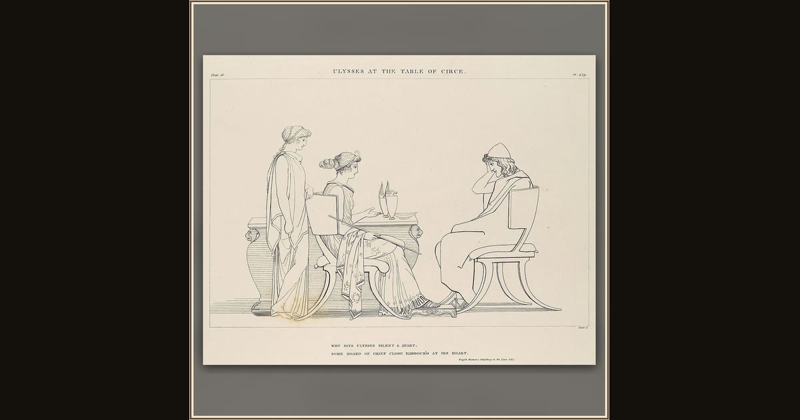

Ulysses at the Table of Circe (The Odyssey of Homer)
John Flaxman · 1805 · The Metropolitan Museum of Art · New York, USA
Flaxman’s clean line drawing for Homer’s Odyssey shows Odysseus at Circe’s table, refusing to eat until she frees his enchanted crew. Explore its place in Book X of the Odyssey.